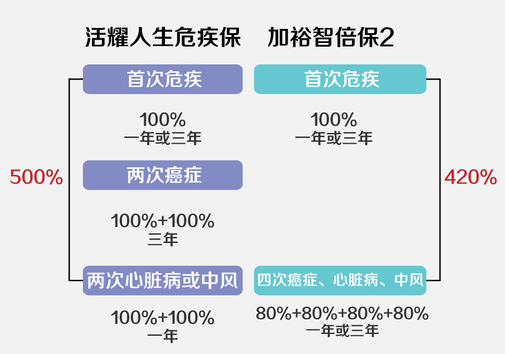

香港友邦「加裕智倍保2」与宏利「活耀人生」哪
友邦和宏利的两款明星重疾产品到底哪家更强？ 现在香港重疾市场各大保险公司的产品皆有自己的亮点。在今年友邦加裕智倍保做了升级以后，与宏利的活耀人生哪款更强？熊猫港险和大家一起分析一下吧。
活耀人生：以癌症三次赔付，外加心脏病和严重脑中风额外二次赔付，首十年额外赔付50%保额；面对这么大的优势，升级后的加裕智倍保2扛得住不？加裕智倍保2，癌症、心脏病、中风合计最高4次额外赔付，30岁以上首10年35%额外赔付，30岁以下50%额外赔付。具体细节如何，继续往下看吧。
一、多重赔付的比较
癌症、心脏病、中风是危疾理赔中三大主要的常见疾病，共占危疾理赔总个案数目超过90%，癌症一项占比平均高达75%以上。且此三大疾病都容易复发。
癌症复发率:10%-50%不等
心脏病复发率:高达47%
中风复发率:25%-35%

癌症多重赔偿：
活耀人生：最高2次，每次间隔期3年，每次赔付100%，最高赔付200%。
加裕智倍保2：最高4次，每次间隔期1年/3年，每次赔付40%/80%；最高赔付320%。癌症间隔期只能选择其中一次为1年，同时赔付40%。
癌症的复发率、越来越发达的医疗技术，多重赔付的间隔期、与赔付次数都尤为重要，相较而言，加裕智倍保2的多重赔付更为人性化。
心脏病、中风多重赔偿：
活耀人生：最高2次，每次间隔期为1年，每次赔付100%，最高赔付200%
加裕智倍保2：最高4次，每次间隔期为1年，每次赔付80%，最高赔付420%。
加裕智倍保2的多次赔付是相通的，使多次赔付做到了最大化。活耀人生的每次赔付都达100%，相同金额赔付率都会高20%。
二、保费对比
保费缴付期=18/20年，危疾保额=US$75,000美元
|
加裕智倍保2 |
活耀人生 |
|
|
男性 |
||
|
0岁 |
18,293 |
16,825 |
|
10岁 |
23,558 |
21,640 |
|
20岁 |
30,699 |
28,525 |
|
30岁 |
38,975 |
38,260 |
|
40岁 |
54,608 |
53,620 |
|
50岁 |
72,090 |
76,240 |
|
女性 |
||
|
0岁 |
18,860 |
16,570 |
|
10岁 |
24,165 |
21,595 |
|
20岁 |
31,334 |
28,570 |
|
30岁 |
42,849 |
38,875 |
|
40岁 |
55,823 |
54,640 |
|
50岁 |
71,105 |
74,890 |
在费率来说，40岁以前投保活耀人生，费率会更低。
三、前十年赠送比例比较
1、活耀人生不论投保年龄是多少，首10年都会提供50%的额外危疾保障。
2、加裕智倍保，30岁及以下赠送50%保额，31岁及以上赠送35%保额。
三、主要优势比较
宏利的优势：
1、活耀人生总赔付额高达500%，略高于加裕智倍保2。
3、首10年赔付比例为50%，不分年龄段，而友邦是分年龄段的（30岁）
4、在未来可以锁定分红2次
5、提供通胀加保权益和免费体检（香港本地居民可能更有意义）
友邦的优势：
1、父母及配偶的身故豁免；
2、儿童疾病保障种类较多，并且涵盖先天性疾病的保障；
3、预支赔偿的按比例保费豁免；
4、多次赔付的人性化使得保单更容易实现理赔
结论：总的来说，这两款重疾都非常不错，熊猫港险的建议是：
1、看中多次赔付的朋友，建议选择加裕智倍保2；
2、在意费率及赠送的保额，建议选择活耀人生。

扫一扫关注微信公众号
咨询电话:0105151551
公司地址:上海浦东新区
备案号:0-1245187431
版权所属:上海市浦东新区